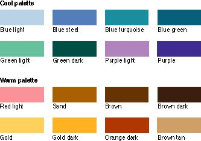

|
|
Limit the Number of ColorsIn order to maintain consistency with the Macintosh interface, use as few colors as possible in your designs. The fewer colors you use, the less flashing occurs when the screen's color table is updated during screen redrawing.The color table contains the colors currently available for display on the screen. Using fewer colors also results in less visual clutter on the screen. Figure 9-6 shows an example of a palette with a limited number of colors used for art design. If you use a graphics application to do design work, make sure that the colors you use are available in the default color tables in system software. For more information, see the discussion of the Palette Manager in Inside Macintosh. Figure 9-6 A limited palette of colors  |